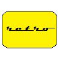

ElectroData/Burroughs Datatron 205 Emulator –
Useful Links
This page presents a number of links to documents, source code, object code, and utilities for the 205.
General Information
- Emulator Hosting Site
- Describes how to configure system components and disk subsystems for the emulator.
- Open-Source Project Site
- Source code, documentation, and other developer resources for the retro-205 emulator project at GitHub.
- Project Blog
- Tom Sawyer's Burroughs 205 blog, which includes posts related to this emulator.
- Tom Sawyer's 205 Site
- Tom Sawyer's web site devoted to the 205, with several pages devoted to the history of the system, its hardware and software components, and Tom's experiences using a 205 in the early 1960s.
- Burroughs 205 Documents at bitsavers.org
- A collection of scanned copies of original Burroughs manuals and other reference materials for the Datatron 205 system.
Paul Kimpel's Emulator Posts on Tom Sawyer's 205 Blog
- Introducing the retro-205 Emulator
- Initial post describing the emulator, control panels, and "console" (paper-tape and Flexowriter) input-output equipment.
- The Mighty CARDATRON
- Describes the Cardatron device that interfaced the 205 with IBM card-based tabulating equipment.
- Using the retro-205 Cardatron
- Describes how to use the Cardatron and card-based peripherals within the retro-205 emulator.
- Moving to GitHub
- Discusses relocation of the project's open-source repository from Google Code (now defunct) to GitHub.
- Knuth's EASY Assembler
- Describes the reconstruction of Donald Knuth's EASY and MEASY assemblers for the 205, and how to use them within the retro-205 emulator.
- Magnetic Tape for the retro-205 Emulator
- Describes the magnetic tape subsystem for the 205, and how to use it within the retro-205 emulator.
- Knuth's Algol-58 Compiler
- Describes the effort to reconstruct and get running the Algol-58 compiler for the 205 written by Donald Knuth in 1960.
Knuth's EASY & MEASY Assemblers
- Elegant Assembly System for the 205 ("EASY")
- Assembly listing of the EASY assembler donated by Donald Knuth to the Computer History Museum. This document includes notes for use of the assembler, but lacks the symbol table and initialization code.
- "EASY" – Elegant Assembly SYstem
- A second assembly listing of the EASY assembler at CHM, without the notes but including the symbol table and initialization code.
- "MEASY" Modified EASY Assembly System for the 205
- Assembly listing of the MEASY assembler donated by Donald Knuth to the Computer History Museum. This document includes notes for use of the assembler, but lacks the symbol table and initialization code.
- "MEASY" – More Elegant Assembly SYstem
- A second assembly listing of the MEASY assembler at CHM, without the notes, symbol table, or initialization code.
- Source, Object, and Listing Files
- Transcribed source code for the EASY and MEASY assemblers, card deck image files that can be loaded into the retro-205 emulator and run, and assembly listings of the two assemblers. See "$contents.txt" in this folder for a description of the individual files.
Knuth's Algol-58 Compiler
- Listing of Burroughs Algebraic Compiler for the 205
- MEASY assembly listing of the Algol-58 compiler, donated to the Computer History Museum by Donald Knuth.
- The Internals of ALGOL 205
- Notes and flowcharts on the internal workings of the Algol-58 compiler, donated to the Computer History Museum by Donald Knuth.
- Algol Compiler for Burroughs 205
- Draft coding and notes on the Algol-58 compiler, donated to the Computer History Museum by Donald Knuth.
- Source, Object, and Listing Files
- Transcribed source code for the Algol-58 compiler, tape image files that can be loaded into the retro-205 emulator and run, and assembly listings of the compiler. See "$contents.txt" in this folder for a description of the individual files.
Burroughs Algebraic Compiler
- Source, Object, Listing, and Sample Files
- Object code for the production Burroughs Algebraic Compiler (a more complete version of Knuth's compiler above), along with loadable tape, card, and paper-tape images that can be run in the retro-205 emulator, and a few sample programs. The object code for this version of the compiler was transcribed by Tom Sawyer from a numeric tape dump listing generated at the University of Portland in the early 1960s. See "$contents.txt" in this folder for a description of the individual files.
Miscellaneous
- Demo 205 Programs
- Small card-deck and paper-tape demonstration programs that can be loaded into the retro-205 emulator and run. See "$contents.txt" in this folder for a description of the individual files.
Revised
2015-11-15